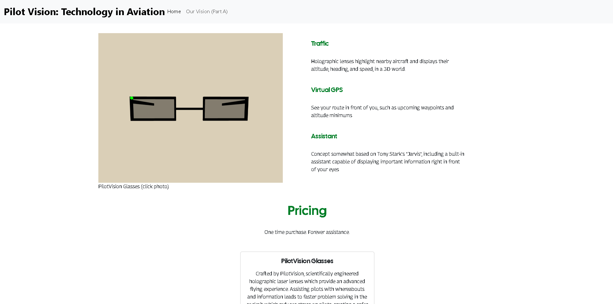

Freedom Project
Context
I am a student at HSTAT in the Software Engineering Program. The "Freedom Project" for SEP10 is a year-long project all about making a website that informs the viewer of the current and future innovations in the topic of my choosing. For my project, I chose the topic of Aviation. I used HTML, CSS, Bootstrap, and Github. I also chose to independently study **A-Frame** in order to help me make my website.Content
My invention, the PilotVision Glasses, assists pilots by displaying important information in front of their eyes, leading to less stress in a flying enviornment. My Website is minimal and doesn't present the viewer with too much information, keeping it simple. The glasses could replace some important things in the cockpit that were developed by human beings, with jobs, such as the Heads-Up Display. The glasses also have a Built-In Assistant, meaning the need for more than 2 pilots in a cockpit is uneccesary.Reflection
Challenges
One major challenge that I faced during making my MVP was putting my A-Frame scene on my website, which gives a visual of my glasses. The goal was to have an embed of my A-Frame scene as an interactive image, next to the description of the glasses.
This resulted in the embed of the A-Frame popping up, but the scene would never load. When you first enter a website with an A-Frame embed on it, it displys a blue screen with 3 loading white dots, and this usually would take a couple seconds for the scene to load. What happened to me is that the 3 white dots never stopped loading and my scene was never visible. I took this up with Mr. Mueller, and even he himself could not figure out what the problem is. My solution to this was to take a screenshot of my A-Frame scene in a different file, where it worked, and attach it to my website as a clickable link.

PilotVision Glasses (click photo)
This resulted in a clickable image, where it would lead to a seperate A-Frame file.
Takeaways from presenting
Presenting in front of my class was fairly easy for me, as I have learned how to speak to an audience well, which I know some people struggle with. It was killing me though, waiting to present the whole time because I was really excited to show off my product to my class, along with giving a clean presentation, in which I ended up going last which was quite funny. There are three takeaways that I have from presenting to my class.
- Practice your presentation
- We're improving, never degrading
- Eye contact is key
Next Steps
If I were to redo this project, I would definetely procrastinate less and spend more time on my website instead of just doing nothing in class for the first week of the project which resulted in me staying up countless hours to try and get the project done.
WebpageCode
